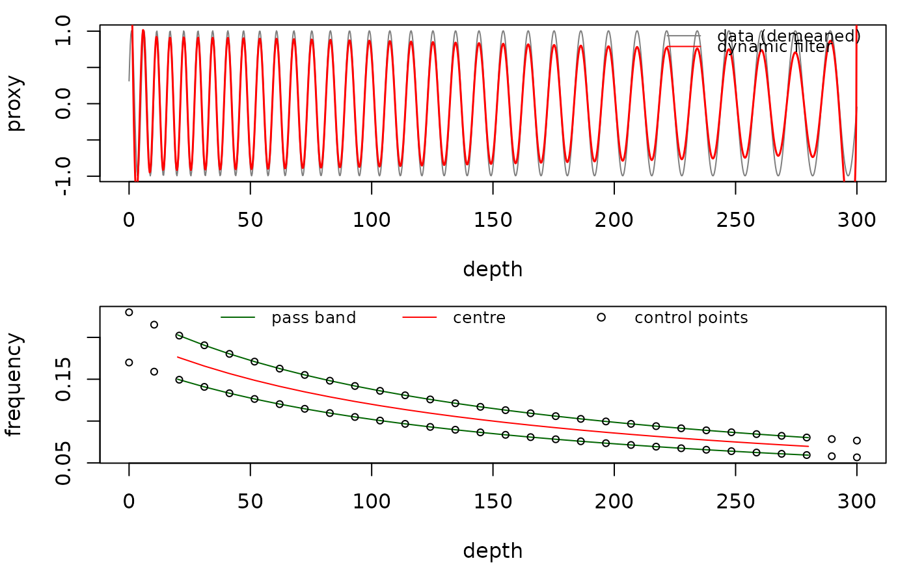

The plot_dynamic_filter function plots the
output of dynamic_filter: the (demeaned) data with the
filtered signal, and the depth-varying pass band (window lower, upper and
centre frequencies or periods, with the control points), reproducing the
overlay Acycle draws on its evolutionary spectrum
(dynamic_filter_lang.m). Written for the R translation of Acycle v3.1
dynamic filtering (Mingsong Li).
Usage
plot_dynamic_filter(
data = NULL,
dyn_filter = NULL,
period = FALSE,
x_lab = "depth",
y_lab = "proxy"
)Arguments
- data
Record that was filtered, the same as given to
dynamic_filter: a two-column matrix or data frame with depth/time in column 1 and the proxy value in column 2. It is drawn demeaned in the top panel. Required (Default=NULLgives an error).- dyn_filter
Dynamic filter result to plot: the list returned by
dynamic_filter(itsfiltered,windows,lower_controlsandupper_controlselements are used). Required (Default=NULLgives an error).- period
Unit of the pass band in the bottom panel (logical):
TRUEdraws the band limits, centre and control points as periods (1/frequency, depth/time units),FALSEas frequencies (cycles per depth/time unit).Default=FALSE.- x_lab
Label of the depth/time axis of both panels (character).
Default="depth".- y_lab
Label of the y-axis of the data panel (character).
Default="proxy".
References
Li, M., Hinnov, L., Kump, L., 2019. Acycle: Time-series analysis software for paleoclimate research and education. Computers & Geosciences 127, 12-22. <doi:10.1016/j.cageo.2019.02.011>
Author
Michiel Arts (R translation); original MATLAB code: Nicolas Thibault, Giovanni Rizzi and Mingsong Li (Acycle).
Examples
# \donttest{
depth <- seq(0, 300, by = 0.25)
period <- 5 + 10 * depth / 300
proxy <- sin(2 * pi * cumsum(1 / period) * 0.25)
ctrl <- dynamic_filter_controls(tracked = cbind(depth, period),
rel_bandwidth = 0.3, n_points = 30)
res <- dynamic_filter(data = cbind(depth, proxy), controls = ctrl,
window_length = 40, step_length = 1)
plot_dynamic_filter(data = cbind(depth, proxy), dyn_filter = res)

# }